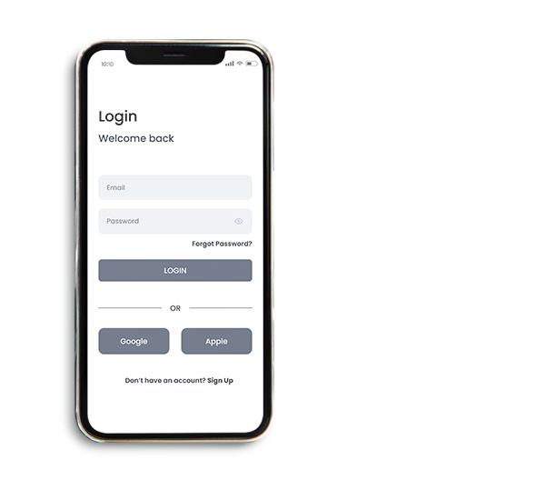
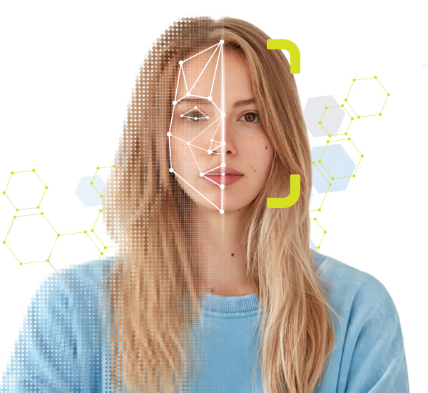
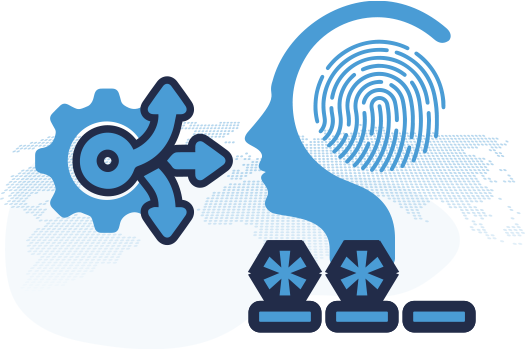
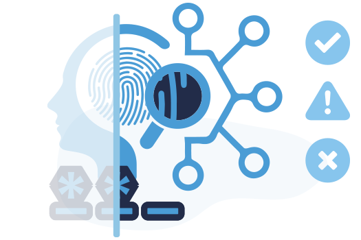

Inglês
Inglês Espanhol
EspanholConheça KYC e AML Globais com Facilidade
Suíte de 2FAs
Fornecendo a você serviços de autenticação de ponta líderes globais, desde códigos PIN de telefone e perguntas baseadas em conhecimento até a detecção biométrica do cliente.
Fluxos de Trabalho
Implante facilmente 2FAs independentes para autenticação multifator para logins, transações ou métodos de pagamento específicos configuráveis por região, mercado ou conta.
Ative e viva
Nosso pacote 2FA está pronto para ativação imediata a partir de uma integração de API com configurações personalizadas para atender às suas necessidades de negócios.
Melhor Segurança
As pessoas costumam usar a mesma senha para várias contas, facilitando a aquisição de contas. A autenticação multifator adiciona uma camada extra de segurança e proteção que os clientes adoram.
Pare de Fraude
Mesmo que os fraudadores obtenham acesso a uma parte dos detalhes da conta, como e-mail ou telefone, a autenticação 2FA multicamadas torna a força de combate mais forte para proteção premium.
Rápido e sem atrito
Nosso 2FA pode ser integrado a qualquer fluxo UIUX e é o mais simples possível, permitindo que seus clientes protejam suas contas ou transações com facilidade e conforto dentro de sua marca.
Obter Fidelidade
Os clientes esperam 2FA para plataformas online e especialmente para pagamentos. Isso os faz sentir seguros, protegidos e confiantes, levando a mais confiança e envolvimento geral com a marca.
Proteger receita
Fraudes e violações de segurança são mais prevalentes sem autenticação. A implementação do 2FA pode parecer cara, mas o impacto da fraude em sua receita é muito maior.

Método Móvel
Com 7,1 bilhões de usuários móveis em todo o mundo, é um método rápido e confiável.
Telefone 4-PIN
Quando um cliente aciona um ponto de contato para autenticação, enviamos automaticamente um código de 4 dígitos para o número de telefone registrado para fornecer o envio correto e validá-lo imediatamente.
Aproveite o SMS Personalizado
Envie mensagens SMS personalizadas para promover ofertas e incentivar a fidelidade e o envolvimento do cliente.
Método do Cérebro
As informações que seus clientes mantêm em suas mentes são pessoais além do alcance.
Respostas Baseadas em Conhecimento
Permita que os clientes selecionem entre uma série de perguntas e configurem as respostas que eles apenas identificariam. A base de conhecimento permite que seus clientes participem de sua experiência de autenticação e fornece uma camada enriquecida de confiança sempre que eles são acionados para fornecer a resposta correta para confirmar não apenas sua identidade, mas também o controle sobre sua conta.

Método Biométrico
As características faciais do seu cliente são tão únicas quanto seu DNA para identificá-lo verdadeiramente.
Reconhecimento Facial
Com telefones celulares modernos, esse método rapidamente se torna uma das autenticações mais contínuas e confiáveis do mundo para atingir 99% de precisão de defesa contra fraudes.
Aproveite a biometria exclusiva de seu cliente por meio do reconhecimento facial integrado para capturar e analisar instantaneamente até mesmo os recursos faciais menores para confirmar a identidade em tempo real.
Autenticação Inteligente e Dinâmica
Onde e quando você mais precisa.

Gatilho Automático
Seja login de conta, processamento de transações ou qualquer ponto de contato com o cliente, você deseja maior segurança.
Sem Atrito
Nosso pacote é o lar dos serviços 2FA que os clientes aprenderam a esperar para garantir uma autenticação perfeita.

Resultados em Segundos
Os dados 2FA são limpos e analisados em tempo real com alertas e ações automáticas se ocorrer um aviso ou falha.

Dados Armazenados
Os resultados da autenticação do cliente são armazenados em seu perfil para enriquecer seu histórico e métricas de comportamento.
Enriquecer a criação de perfis e a mitigação de riscos
KYC Multinível em um Único Ponto de Extremidade de API.
ID Digital
Uma suíte completa de verificações KYC de ponta a ponta com fluxos de trabalho para confirmar a identidade do cliente automaticamente e em tempo real.
ID do Documento
Proteja a identidade do cliente com verificação de documentos de identificação emitidos pelo governo global e detecção de atividade biométrica em tempo real.
Conformidade AML
Conformidade baseada em dados para proteção contra atividades ilícitas, como lavagem de dinheiro, financiamento do terrorismo ou transações fraudulentas com facilidade.
Dados KYT
Proteja suas receitas com verificações contínuas de identidade KYC, verificações transacionais e análise de risco automatizada com painel de KPI ao vivo e centro de ação.